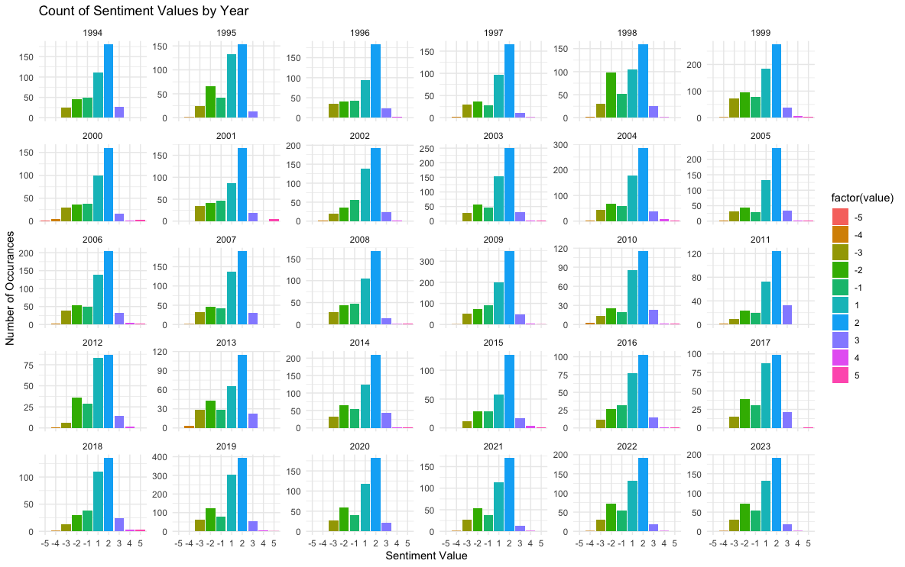
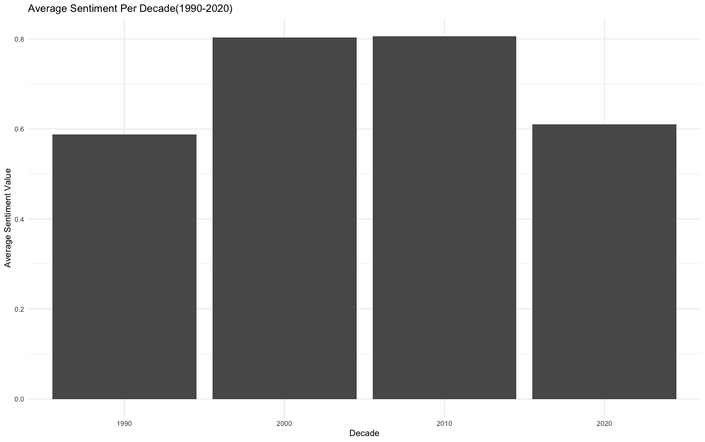
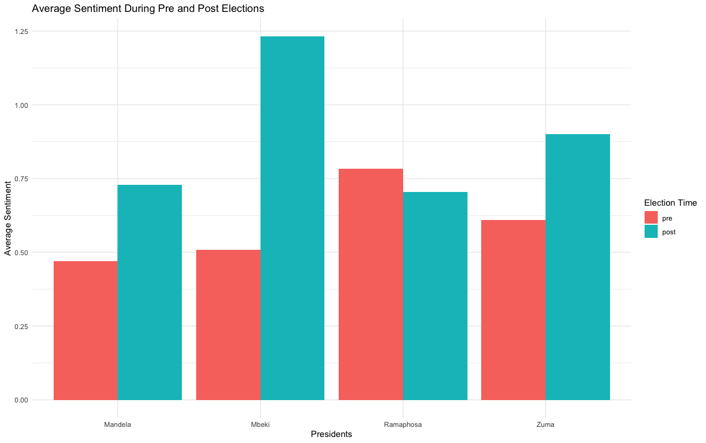
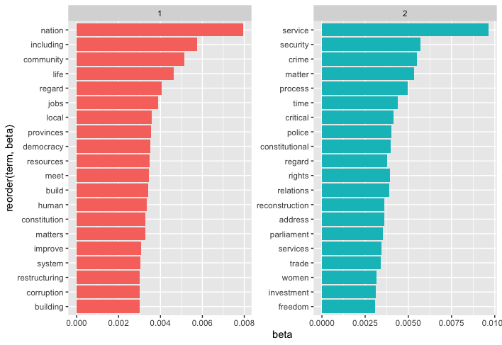
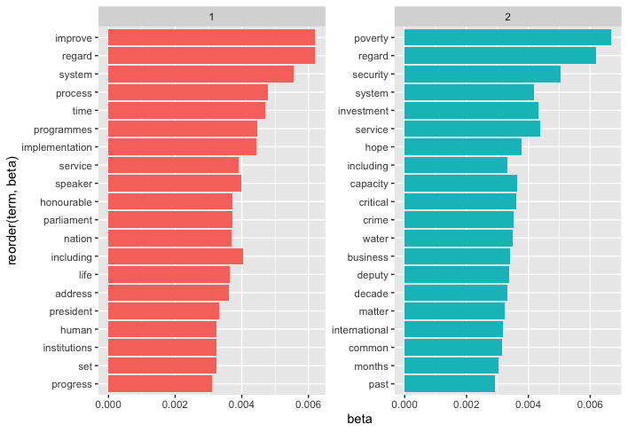
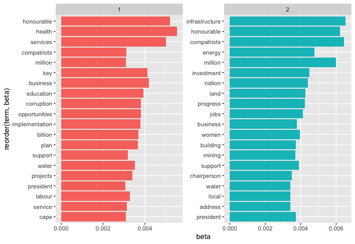
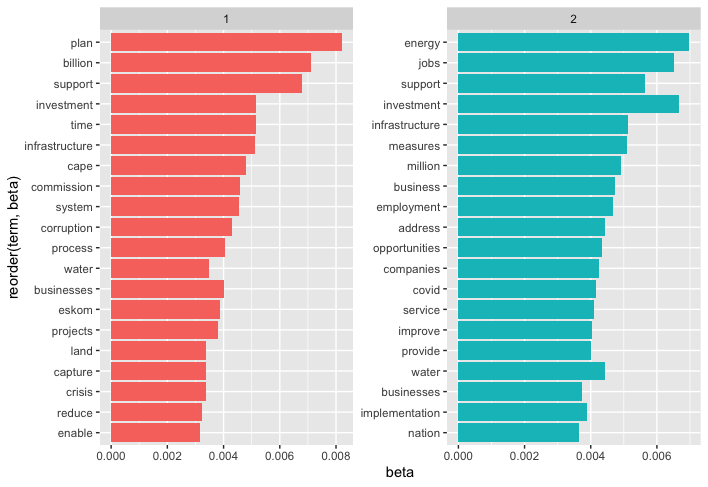

# Define the specific bigram
specific_bigram <- "specific bigram" # Replace with your desired bigram
# Initialize a list to store sentences containing the bigram
sentences_with_bigram <- character(0)
# Search for the bigram in each sentence
for (sentence in sona_sentences$sentence) {
if (grepl(specific_bigram, sentence, ignore.case = TRUE)) {
sentences_with_bigram <- c(sentences_with_bigram, sentence)
}
}
# Print or manipulate the extracted sentences
print(sentences_with_bigram)STA5073Z Assignment 2
1 Introduction
A State of Nation Address (SONA) is a speech given by the President of South Africa in which the president reports on the status of the nation. It functions as an annual report that include political and socio-economic topics. These include but not limited to topics surrounding the nation’s budget, economy, news, agenda, progress, achievements and the president’s priorities and legislative proposals. The SONA gives the public an idea of broader political landscape and socio-economic issues and challenges that are plaguing the country. At the same time, it also reflects on the achievements, growth and progress the country has made in the past year. Furthermore, it provides the public with a direction and understanding of the countries plans.
In this light, the comprehensive analysis of previous SONA speeches from 1994-2023 can provide us with an extensive perspective and viewpoint of the struggles and triumphs over the course history in South Africa. In this assignment, we aim to provide that perspective and viewpoint from a computational approach. We utilise sentiment analysis and topic modelling techniques, specifically Latent Dirichlet Allocation (LDA), to quantify the emotional tone of each president and recognise reoccurring topics that will provide context and understanding to the broader socio-political and economic environment of South Africa.
Sentiment analysis refers to the use of natural language processing (NLP), text analysis and computational linguistics, to identify, extract, quantify, and study affective states and subjective information. On the other hand, topic modelling is a statistical and unsupervised learning technique to identify and discover topics within a collection of text or documents. It is commonly used to classify documents and discover hidden semantic properties in a corpus of text. A related study involves exploring sentiment and topics from Philippine President in the SONA from John Miranda and Rex P. Bringula (2021). The study showcased the SONAs generally expressed positive sentiments while the lowest negative sentiment was during the martial law period in 1974. In this study, they were also able to present which concerns were focused on in their speeches. Furthermore, another related study includes Mining Tourist’s Perception toward Indonesia Tourism Destination. Results shows that joy is the most prominent emotion accompanying visitors’ experiences (Herry Irawan, Riefvan Achmad (2019)). The relevant work showcases that researchers have found significant results when investigating documents of texts with regards to evaluating emotive content or extracting common themes and topics.
2 Data and Methods
2.1 Data Collection
As the aim of this project was to analyse previous SONA speeches delivered by the presidents of South Africa, the data used for this project were SONA speeches from 1994 through to 2023. These were accessed from the South African Government website (https://www.gov.za/state-nation-address) and include speeches from six former presidents: FW de Klerk, Nelson Mandela, Thabo Mbeki, Kgalema Motlanthe, Jacob Zuma and the current president, Cyril Ramaphosa. Overall, 36 speeches were analysed. The sections to follow detail how these speeches were analysed.
2.2 Data Cleaning and Preprocessing
In order to analyse and model the SONA speeches, they had to be cleaned and preprocessed first. The .txt files were first read into R where they were all added to a single dataframe. The information regarding the date and year in which the speech was delivered as well as the president delivering the speech were extracted and adding as columns to the dataframe. In addition to this, the dates were all formatted to the same format, all the punctuation was removed and the words in the speeches were all converted to lowercase. The text was also cleaned to remove the dates that appear at the beginning/towards the beginning of the speeches. Lastly, all numbers were removed for the LDA analysis.
The speeches were then converted to a ‘tidy’ format whereby the data were then processed so that all variables were in columns, all observations were in rows and every value was in a cell where a cell only had one value. During this process of converting the speeches to a ‘tidy’ format, the process of tokenisation was also implemented which is the process of taking a text string, such as each individual speech and decomposing it into chunks which in this case were words. Essentially, the speeches were broken down into words and converted to a format where each observation only consisted of one word. After this was done, stop words or words that occur commonly, were removed from the ‘tidy’ dataset so that these would not add noise while analysing the data.
After the data had been cleaned and pre-processed, exploratory data analysis was conducted on the data and sentiment analysis as well as LDA was carried out on the speeches and words.
2.3 Exploratory Data Analysis
Before conducting any in-depth analysis of the data through sentiment analysis and LDA, exploratory data analysis (EDA) was performed on the data in order to gain a better understanding of the data.
First, the number of words per president were counted. The most number of words from a president was from Mbeki with 5622 words followed by Zuma with 5258, Ramaphosa with 4753, Mandela with 4311 and finally Motlanthe and de Klerk with 1631 and 431, respectively. The lower number of words for Motlanthe can be attributed to the fact that he was only president for roughly six month and hence participated in only one SONA. For de Klerk, this may have been because this was the end of the Apartheid regime for which he was the last president. Furthermore, the top ten most used words across all speeches were as follows: government, south people, country, national, development, africa, public, economic, ensure. All of which one would expect to hear given the nature of the SONA speeches.
Lastly, the top 15 words spoken by each president are summarised in the figures below.

The first figure summaries the top 15 words spoken by president while the second figure shows the same with the exclusion of the words: government, people, south, africa, african.

These are widely used by most presidents and may not be valuable in indicating trends with regards to the most words used. The second figure changes significantly after the removal of the common words. It can be seen that the words associated with de Klerk are focused around freedom and the transitioning of South Africa from an Apartheid state to a democratic one through words such as: ‘constitution’, ‘freedom’ and ‘transitional’. Mandela’s most used words ‘development’ and ‘society’ may be attributed to the re-development of South Africa as a democratic state but words such as ‘crime’ draw attention to the wider social issues. Mbeki’s words seem to be more related to the economy and development while Motlathe’s address similar issues with the addition of poverty. Ramaphosa’s words are even more so centered around economic development and businesses which may be due to the effects of the Covid-19 pandemic during his time as president. Lastly, Zuma’s words follow a similar economic and development trend to the rest.
2.4 Sentiment Analysis
Sentiment analysis is a text mining technique that aims to extract the thoughts and feelings of script to determine their polarity, i.e. positive, negative or neutral. Three approaches are available to conduct sentiment analysis: supervised, lexicon-based and hybrid. The supervised method utilises machine learning algorithms to train the classifier. It is superior in performance to the lexicon-based method, however it requires a substantial amount of labelled data. Lexicon-based sentiment analysis uses sentiment lexicons (dictionaries) to describe polarity. This method is more computationally efficient, but the results may vary depending on the lexicon and domain. A word may be subjective or objective depending on the context, e.g. in the clause “crude oil”, this is an objective use of the word crude; when it is used as “crude language”, it is now subjective and has a negative sentiment. Dealing with negation and sarcasm is also a challenge with this approach. The hybrid method is an amalgamation of the supervised and lexicon-based methods (Sadia et al, 2018).
2.5 Latent Dirichlet Allocation
LDA is a popular topic modelling model which allows one to better understand hidden themes in a collection, classify the documents into these themes and summarise the documents (Kulshrestha, R., 2020). In an LDA model, each document is comprised of various words as is each topic. This document being referred to is achieved after the ‘tidy’ data is converted to a ‘DocumentTermMatrix’.
In an LDA model, one of the hyperparameters is \(k\). If there are \(k\) topics, each topic from the document is generated from a distribution with different probabilities. So if \(z_{km}\) is the \(k\)th topic in the \(m\)th document, it takes a value between 1 and \(K\) (Zhang, Z., 2018).
\[ z_{km} \sim Multinomial(\theta_{m}) \]
where \(\theta_m = (\theta_{m1}, \theta_{m2}, ..., \theta_{mk})'\) is the topic probability.
Once a topic has been decided upon, words are organised around it. So if \(w_{mn}\) is the \(n\)th word used in the \(m\)th document, it would take a value between 1 and \(V\) with \(V\) being the total number of unique words used in all the documents. The equation below shows how a word is generated:
\[ w_{mn}|z_{km} \sim Multinomial(\beta\_k)\]
where \(\beta_k = c(\beta_{k1}, \beta_{k2}, ..., \beta_{kV})'\) is the probability that a word is picked given the topic k is selected.
Lastly, it is important to get \(\theta\) and \(\beta\) values as these represent the distribution of topics for a particular document and the distribution of words within each topic. The assumption is that both are generated from a Dirichlet distribution. For topic probability:
\[ \theta_m \sim Dirichlet(\alpha) \] And for word probability:
\[ \beta_m \sim Dirichlet(\delta) \]
In the context of this project, first the ‘tidy’ data was converted to a ‘DocumentTermMatrix’ to which the LDA model was applied to. First, the top 20 most used words overall were removed from the dataset as a means of pruning the data. A grid search for the best \(k\) hyperparameter was conducted using the metric of coherence values. This measures the relative distance between words within a topic and suggested that a \(k = 17\) be used. However, upon inspection of these topics, there was much overlap. The next highest values were for greater than 17. Finally, a \(k=9\) was chosen as the topics were clear and there was little overlap. An LDA model was created on the overall data as well as for each president. For each individual president, a value of \(k=2\) was chosen.
2.6 Use of Large Language Models
While not an aim of this project, it was a requirement that we experiment with the use of a large language model such as ChatGPT to assist with the assignment. While using basic search engines to help with coding and writing are helpful, ChatGPT is more efficient in providing specific answers to some questions as it can provide textual context, conversational interactions and can remember previous questions and refer to them.
In terms of coding, ChatGPT was useful in assisting with code for various function parameters as well as the syntax for certain elements of this document e.g. the equations. However, it sometimes produced code that was not correct or used incorrect functions not belonging to the packages specified. In this case, the error produced in R was inputted back into the conversation and it was almost always able to provide the correct code, albeit after many tries sometimes. The inputs, however, into the conversation had to be very specific to provide the correct context for ChatGPT and to avoid unnecessary back-and-forth on simple questions stemming from a lack of context. One big plus was ChatGPT’s ability to remember previous questions in a conversation so that once the context had been specified, it could draw from previous questions to answer future ones. Overall, from a coding point of view, this large language model performed decently but there was often a lot of prompting that had to be done.
An example of applying ChatGPT to generate code was requesting for a function that extract sentences containing specific bigrams. Before providing much context, the response given was steps to manually do it in a programming language. When prompted for code, ChatGPT assumed that it was being done in Python. To provide context, the programming language as well as the structure of the tidy data was provided as a response. R code was subsequently returned and it worked exactly as expected. Comments were also provided to guide the user.
In terms of understanding specific terminology and better understanding the models, it was able to provide a decent summary of these which in conjunction with other resources helped with the understanding of these models. And lastly, in terms of writing, ChatGPT was a useful tool for simplifying language, paraphrasing sentences and providing succinct alternatives to inputted sentences.
3 Results and Discussion
3.1 Sentiment Analysis
The results obtained from employing the lexicon-based approach to determine the outlook of the South African Presidents will be discussed. The bing and nrc lexicons were explored. In the instance that a word was not in the lexicon, the default label was set to “neutral”. The bing lexicon was developed by Minqing Hu and Bing Liu as the Opinion Lexicon. It comprises of 6786 words, where 2005 are “positive” and 4781 are “negative”.
The nrc lexicon was compiled by crowdsourcing on Amazon Mechanical Turk by Saif Mohammad and Peter Turney. The lexicon has 13872 words and incorporates more sentiments in addition to positive and negative: anger, anticipation, disgust, fear, joy, sadness, surprise and trust.
| Category | No. of Words |
|---|---|
| anger | 1245 |
| anticipation | 837 |
| disgust | 1056 |
| fear | 1474 |
| joy | 687 |
| negative | 3316 |
| positive | 2308 |
| sadness | 1187 |
| surprise | 532 |
| trust | 1230 |
3.1.1 Word-Level Analysis
In this subsection, a word-level analysis was conducted. The top 20 positive and negative words in the speeches as a whole, as well as a breakdown per president using the bing lexicon are presented below.


Overall, the word improve was the most used positive word in all of the speeches. This is also true when the words are grouped by president, except for deKlerk, whose most used word was freedom. Other recurring words include progress and peace/peaceful.


Poverty, crime and corruption were the most commonly used negative words. They also appeared in the breakdown by president; except for deKlerk, who did not have any of these three words in his top ten negative words. deKlerk commonly used the words violent, illegal and discrimination.
3.1.2 Sentiment-Level Analysis
The general feeling of the speeches, broken down by sentiments, for each president were examined using both the nrc and bing lexicons. The neutral words were excluded, as they dominate over the other sentiments.

The proportions of positive to negative words do not seem to differ by a large amount. However, the plots indicate that Zuma, Mbeki and Mandela expressed relatively more positive sentiments in comparison to the other presidents. To further delve into the presidents’ attitudes, the more comprehensive nrc lexicon was applied.
-1.png)
From the plots, it can be observed that, besides negative and positive sentiments, prevalent themes include trust and anticipation. To gain some insight of the words specifically associated with these themes, the top 2 words associated with trust or anticipation for each president are presented in a table below.
| President | Word | nrc | bing |
|---|---|---|---|
| deKlerk | constitutional | trust | neutral |
| deKlerk | freedom | trust | positive |
| Mandela | public | anticipation | neutral |
| Mandela | nation | trust | neutral |
| Mbeki | public | anticipation | neutral |
| Mbeki | continue | anticipation | neutral |
| Mbeki | continue | trust | neutral |
| Motlanthe | public | anticipation | neutral |
| Motlanthe | system | trust | neutral |
| Ramaphosa | economy | trust | neutral |
| Ramaphosa | public | anticipation | neutral |
| Zuma | continue | anticipation | neutral |
| Zuma | continue | trust | neutral |
Most of the words associated with trust or anticipation in the nrc lexicon are categorised as “neutral” in the bing lexicon. This highlights the variability that different dictionaries can yield in an analysis. Additionally, it is important to note that due to the multi-level nature of words in the nrc lexicon, some words are associated with more than one sentiment, such as continue.
Changes of the sentiments over time were also investigated. Line plots with corresponding smoothed lines were generated to assess any shifts in positive or negative sentiments.
To assess whether the shifts are statistically significant, a logistic regression model was employed. Logistic regression is a modelling technique, based on regression, in which the dependent variable is binary. This is an appropriate model to use because the dependent variable has a binary outcome: positive or negative.

| Estimate | Std. Error | z value | Pr(>|z|) | |
|---|---|---|---|---|
| (Intercept) | 0 | 1.0694006 | 0 | 1 |
| date | 0 | 0.0000745 | 0 | 1 |
From the plot, it appears that there has generally been a decline in negative sentiment over the years.
The p-values obtained from the logistic regression, however, are above the traditional threshold of 0.05, indicating that there was no significant decrease in the proportion of negative sentiments over time.
3.1.3 Bigrams Analysis
An n-gram is a sequence of n words in a text. Bigrams, in particular, are pairs of words that are adjacent to each other. Certain words, such as “not” change the meaning of the subsequent word by negating it. It is therefore important to consider this when conducting sentiment analysis.
This subsection section will explore the most common positive and negative bigrams in the speeches using the bing dictionary. To determine the net sentiment of a bigram, positive words are assigned a value of 1 and negative words are assigned a value of -1. Words that are preceded by a negation word (‘not’, ‘no’, ‘never’, ‘without’ or ‘anti’) had their sentiment reversed. During the analysis, a few of the labels given to words in the bing dictionary did not align with this context and were thus adjusted. Consequently, ‘honour’ and ‘hope’ were changed from neutral to positive. The word ‘oppression’ was reclassified from neutral to negative.


The findings illustrated in the plots partially align with what was observed in the top 20 positive and negative words. In the case of positive words and bigrams, several words appeared in both sets, such as improve, support, and progress. For the negative bigrams, the main themes were similar as before: poverty, crime and corruption. Interestingly, none of the negative bigrams contained negation words; these were subsequently extracted separately.

The most frequently occuring negation words in the bigrams were not and no. Some sentences that include the “not enough” bigram are:
“But the response is that not enough criminals are being arrested and the quality of investigation is poor.”
“Not enough jobs are being created.”
“While structural reforms are necessary for us to revive economic growth, they are not enough on their own.”
These examples highlight the importance of taking negation words into account as they reverse the sentiments of the sentences.
3.2 Latent Dirichlet Allocation
3.2.1 Analysis of All Presidents
As mentioned earlier, 9 topics were produced from the data. The 20 most used words can be seen in the figure below.

While there is still some overlap among the topics, the general idea of these is fairly clear. The first topic seems to focus on a new democratic South Africa and the challenges this brings in the improvement on formerly oppressed bodies. Topic two mentions the words, ‘crime’, ‘security’, ‘improve’ and ‘progress’, which among many other words touches on the crime issues related to South Africa as well as the need for progress as violent crimes have been prevalent in South Africa since the end of Apartheid. The third topic focuses on ‘energy’, ‘infrastructure’, ‘health’, ‘water’, ‘mining’ and ‘women’. This may be a nod to South Africa’s water and energy infrastructure and development as well as the need to invest more in these plans and infrastructure to ensure consistent supply. ‘Women’ and ‘children’ which may be an indication of the vulnerability of these groups to the aforementioned issues or the need to include women in these sectors. Topic four looks at ‘water’ and ‘infrastructure’ again but also mentions ‘cape’, ‘communities’, ‘rural’ which may be referring to the Cape Town drought which occurred from 2015 - 2018 where rural areas were affected badly. Topic 5 looks at resource issues again but with a focus on the economy and business and to provide support to them as the following words are mentioned: ‘water’, ‘crisis’, ‘challenges’, ‘electricity’, ‘businesses’, ‘employment’, ‘support’ and ‘companies’.
Topic six mentions ‘women’, ‘crisis’, ‘hope’, ‘improve’ which may refer to the gender-based violence issues in South Africa which disproportionate affect women. Topic seven refers to a transition from an Apartheid South Africa to a democratic South Africa. Topic 8 contains ‘billions’, ‘energy’, ‘support’, ‘commission’, ‘corruption’ all which refer to South Africa’s high corruption levels, especially in regards to the energy sector, more specifically Eskom. Lastly, the ninth topic seems to focus on ‘service’ ‘issues’ and ‘poverty’ ‘issues’ which need to be addressed for the ‘black’ majority of South Africa who have been disproportionately been affected by poor service delivery and poverty due to the ramifications on Apartheid laws and poor initiative to uplift since then.
Overall, it was found that, per topic, Mandela and Ramaphosa appeared 7 times, Mbeki and Zuma 10 times and Motlanthe and de Klerk 1 time. This shows each presidents contribution to the topics.
3.2.2 Analysis of Individual Presidents
Next, topic modelling was conducted for each president. While two topics were produced for each president, for those with a lower number of words, there was some overlap. Going chronologically, we start with de Klerk. de Klerk’s first topic focused on words such as ‘freedom’, ‘constitution’, ‘peaceful’, support’ as well as ‘zulu’ which as true to the climate during the speech was in reference to the transitioning to a democratic and free South Africa. Zulu is mentioned as it was ensured in the constitution that the Zulu leaders be given a certain amount of political power as respect to the Zulu Kingdom. His second topic refers to ‘election’ and ‘future’ as this one is more focused on the future of South Africa and the move forward.

Mandela’s first topic mentions ‘progress’, ‘past’, ‘hope’, ‘improve’, ‘time’, ‘building’, ‘democracy’ all of which are a related to improving the life of previously marginalized groups through a new, democratic state. His second topic focuses on many issues South Africa still faces such as crime and women’s rights as well as security. Police is also mentioned in this topic as well as reconstruction. This topic may be related to the social issues South Africa is facing and potential methods of change.

Mbeki’s first topic addressed the need for improvement of services and infrastructure for local communities as well as some mention of international resources. The second topic looks at some of South Africa’s issues such as ‘poverty’ and ‘crime’ and potential words that could be used to address these issues. ‘Water’ is also mentioned in this topic which may be an additional issue being addressed.

As Motlanthe only gave one speech, his topics are not very well defined. The first looks issues related to South Africa as well ways for improvement. While the second speaks to many things such as ‘democracy’, ‘poverty’ and ‘children’ too.

On the topic of water, Zuma’s first topic mentions both ‘water’ and ‘cape’ as an indication of reference to the Cape Town droughts. It also mentions ‘business’, ‘health’ and ‘education’ all of which were sectors affected by this droughts. The topic also mentions ‘job’ and ‘jobs’ both of which may refer to the unemployment rates and promises of job creation. The second topic looks at resources such as ‘electricity’, ‘water’, ‘energy’ and also words such as ‘support’ and ‘women’. This topic may be referring to the consistent supply of these resources and ways to ensure this while also focusing on support for women, especially in light of gender-based violence issues.

Lastly, the current president, Ramaphosa’s, first topic is in relation to ‘energy’, ‘eskom’ and ‘challenges’ which is a nod to the energy issues South Africa is facing in relation to Eskom. ‘Investment’ and related words are mentioned implying this topic also includes the measures that are currently in place. ‘Health’ is also mentioned as well as ‘capacity’ which may be referring to the Covid-19 pandemic. The second topic mentions ‘corruption’ and ‘electricity’, ‘investment’ and related words which may be a nod to the corruption in the energy sector, especially Eskom.

3.3 Trends
3.3.1 Yearly Trends
The first figure below displays the average sentiment segregated by year and president. Nelson Mandela’s term, symbolizing the dawn of democracy in South Africa manifested positive sentiment scores. However, there is a sharp decline after that from 1995-1999. Furthermore, we notice that Mbeki in the early 2000’s had more positive sentiment as compared to the late 90’s. However, this sentiment diminishes over his tenure, possibly indicating challenges or controversial issues faced during his presidency. Zuma’s term showcases dramatic peaks and valleys in sentiment scores. We notice a steady increase in positive sentiment in the late 2000’s peaking in 2010 at a sentiment score of 1.25. Various factors could be investigated for this. A possible reason for this is the 2010 FIFA World Cup that was hosted in South Africa. However, after the world cup (2010) we notice a volatile pattern associated with Zuma’s tenure as contrast to the high witnessed in 2010, there was a drop leading to a sentiment score of below 0.5 in 2013. Furthermore, ever since Ramaphosa has been elected into office in 2018, we notice a steady decline in sentiment score. A possible reason for this could be the loadshedding and Coronavirus struggles that have plagued our country in recent years. These will be further investigated in the trends for topic modelling section.

The second figure echos the analysis that is portrayed in the figure above. A further comment can be extremely negative or positive sentiments (-5 and 5) are sparsely represented across the years, indicating that highly polarized sentiments are rare in the dataset. Throughout most of the years, the neutral sentiment (values 1 and 2) remains pre-dominant, suggesting a generally stable mood.

3.3.2 Decade Trends
Within the span of three decades, this figure illustrates the average sentiment per decade. The 2000s and 2010s emerge as periods marked by heightened positive sentiment. In contrast, the 1990s and the 2020s manifest a more tempered positivity.

3.3.3 Pre and Post Election Trends
The following figure depicts the average sentiment during the pre and post-election phases for several South African presidents, namely Mandela, Mbeki, Ramaphosa, and Zuma. Analyzing the sentiment before the elections (pre) for each president reveals a trend. Generally, the sentiment before the election is comparatively more negative or less positive than the post-election phase. This pattern could be attributed to the strategic communication employed during election campaigns. It is common during election campaigns for leaders or political parties to highlight existing problems or crises to win voter trust by promising solutions. By making the situation seem more critical, candidates can position themselves as the needed change.

3.3.4 Overall Trends
It is found that the SONAs generally expressed positive sentiments post-elections, as supposed to pre-elections. Another finding, indicated a more negative sentiment in the speeches during the 1990s and the 2020s when juxtaposed against the relatively more positive undertones from 2000 to 2020. These sentiment shifts keenly reflect the changing political landscape and challenges faced in South Africa during these periods. Overall, our findings reveal distinct shifts in the emotional undertones of presidential speeches over time, providing insights into the evolving political narratives and concerns of the nation.
3.3.5 Topic Modelling Trends
In the 1990s, there was a emphasis on the foundational elements of the South African democracy. Words such as ‘democracy’, ‘constitution’, ‘building’, and ‘restructuring’ prominently feature in this era.

Fast forward to the 2000s, the LDA topics revealed a shift towards enhancing and refining policies, programs, and institutions. Additionally, another topic that was of focus was service deliveries for the South African populace, emphasizing aspects such as security and water.

The following decade (2010-2020), the SONA speeches seem to emphasize on capitalizing on opportunities and building the nation’s education and entrepreneurial potential. The topics highlighted a push for bolstering education and supporting businesses.

In the most recent era, post-2020, the narrative seems to have shifted towards rectifying service delivery and corruption, notably within entities such as Eskom. This analysis also touches noted challenges such as job creation and the energy crisis related to Eskom.

4 Conclusions
A sentiment analysis of the State of Nation Addresses was conducted to discern the overall feelings expressed by the South African presidents over time. It was discovered that most of the presidents, with the exception of deKlerk, had common interests: peace, freedom and progress. Recurring concerns were centered around poverty, crime and corruption. The analysis indicated that concerns over these themes did not change over time, as the logistic regression model indicated that the sentiment trend was consistent.
In the LDA, the topics found for each president summarised the political climate of their times well and were insightful into seeing which issues were at hand and the progression of. Overall, the topics progress from democracy and freedom related words to economic and development jargon which was mentioned by almost all the presidents with a nod to non-economic and social issues such as crime, poverty, women or water throughout the speeches.
Lastly, in terms of limitations and scope for future improvement, some of the presidents were under-represented which limited the validity of the analysis of their sentiments and topics. There were also hindrances due to the subjective nature of lexicons as many words may have been classified. With the LDA, the topic interpretations were done manually and the interpretations are subject to the researcher. For future work, researchers may want to balance their dataset for a more representative analysis and the application of automatic keyword extraction may be used to classify the topics in real time.
6 References
Irawan, H., Akmalia, G. and Masrury, R.A., 2019, September. Mining tourist’s perception toward Indonesia tourism destination using sentiment analysis and topic modelling. In Proceedings of the 2019 4th International Conference on Cloud Computing and Internet of Things (pp. 7-12).
Kulshrestha, R. (2020). Latent Dirichlet Allocation(LDA). [online] Medium. Available at: https://towardsdatascience.com/latent-dirichlet-allocation-lda-9d1cd064ffa2. [Accessed 17 October 2023].
Miranda, J.P.P. and Bringula, R.P., 2021. Exploring Philippine Presidents’ speeches: A sentiment analysis and topic modeling approach. Cogent Social Sciences, 7(1), p.1932030.
Sadia, A., Khan, F.K., & Bashir, F. (2018). An Overview of Lexicon-Based Approach For Sentiment Analysis.
Zhang, Z. (n.d.). Text Mining for Social and Behavioral Research Using R. [online] books.psychstat.org. Available at: https://books.psychstat.org/textmining/topic-models.html [Accessed 17 October 2023].